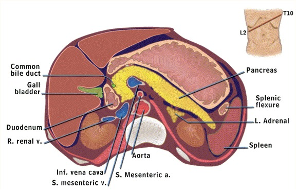
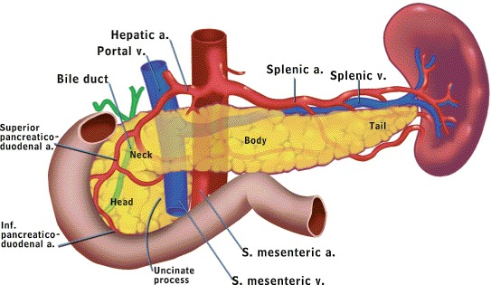
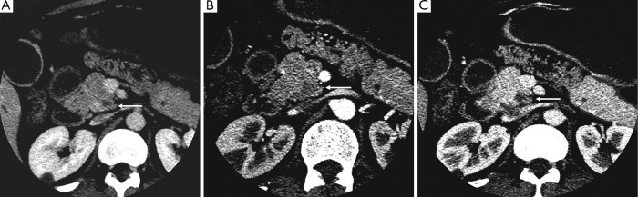
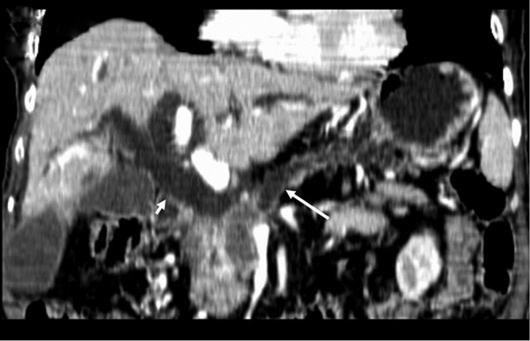

定義與定位
這個病是什麼？在分類樹的哪個位置？跟隔壁的病靠什麼分開？
| 項目 | 重點 |
|---|---|
| 本質 | **胰管上皮（ductal epithelium）**來源的腺癌，佔胰臟惡性腫瘤約 85–90%；外分泌部起源，不是內分泌部 |
| 好發部位 | 頭部與鉤突約 60–75%，體尾部約 25–40%（各來源略有差異，但「頭部佔絕大多數」的方向一致）——這個比例本身就決定了臨床樣貌 |
| 好發族群 | 多在 60–80 歲；男性略多；50 歲以下罕見（若發生要想遺傳症候群） |
| 分類位置 | 與神經內分泌腫瘤（pNET）、囊性腫瘤（IPMN、MCN）分開；後兩者預後與處置完全不同 |
| 為什麼難治 | 厚實的**纖維增生性間質（desmoplastic stroma）**血流差、藥物難進；沿神經與淋巴早期擴散；早期無症狀 |
病因與機制
為什麼會發生？病生理鏈條長什麼樣？——這一節寫好，下面的臨床表現就不用背。
flowchart TD A["吸菸、慢性發炎<br/>遺傳易感性"] --> B["KRAS 等驅動突變<br/>PanIN 逐步進展"] B --> C["侵襲性腺癌<br/>厚實纖維間質"] C --> D["長在胰頭<br/>壓迫總膽管"] C --> E["長在體尾<br/>侵犯腹腔神經叢"] C --> F["釋出組織因子與黏液蛋白"] D --> G["無痛性阻塞性黃疸"] E --> H["上腹痛穿透至背部"] F --> I["高凝血狀態與靜脈血栓"] classDef key fill:#263238,stroke:#000,color:#fff,font-weight:bold class G,I key
| 橫切面：胰頭、十二指腸與總膽管 | 前視：胰體尾與脾血管 |
|---|---|
 |
 |
胰頭位在十二指腸 C-loop 內，遠端 bile duct 貼／穿胰頭後進入壺腹；胰頸後方是門靜脈匯合與 SMA／SMV，體尾上緣則沿行 splenic artery／vein 至脾門。腹腔神經叢環繞 celiac trunk 與 SMA 根部、位於胰體後方，因此體尾部腫瘤容易沿神經血管平面侵犯並造成背痛。Source: Holland-Frei Cancer Medicine: Pancreatic anatomy, Figs. 1–2。
危險因子
| 類別 | 項目 | 記憶點 |
|---|---|---|
| 可改變（最重要） | 吸菸 | 最強的可改變危險因子，戒菸後風險逐年下降；酒精本身證據較弱，主要透過造成慢性胰臟炎 |
| 慢性發炎 | 慢性胰臟炎（見 Acute pancreatitis）、遺傳性胰臟炎（PRSS1） | 遺傳性胰臟炎因為發炎起始得早，終生風險特別高 |
| 代謝 | 糖尿病、肥胖 | 見下方 callout——新發糖尿病可能是果不是因 |
| 家族與遺傳 | BRCA2（最常見的胚源性致病變異）、BRCA1、PALB2、ATM、Peutz–Jeghers（STK11）、FAMMM（CDKN2A）、Lynch syndrome | 有 BRCA1／2、PALB2 者對 platinum 類與 PARP 抑制劑反應較好 |
| 其他 | 年齡、男性、非裔族群、慢性 B 型肝炎、幽門螺旋桿菌（證據較弱） | ABO 血型（非 O 型風險略高）屬冷知識層級 |
臨床表現
典型病人長什麼樣？部位決定一切。
| 頭部／鉤突（約 60–75%） | 體尾部（約 25–40%） | |
|---|---|---|
| 主要症狀 | 無痛性阻塞性黃疸（招牌）、皮膚搔癢 | 上腹痛穿透至背部（前傾或屈膝可稍緩解） |
| 伴隨表現 | 茶色尿、灰白便（acholic stool）、體重減輕 | 體重減輕（常更顯著）、新發糖尿病 |
| 理學檢查 | Courvoisier sign：黃疸＋可觸及、不會痛的腫大膽囊 | 多無特殊徵象；晚期可摸到腫塊或腹水 |
| 生化 | 直接型 bilirubin 上升、ALP 與 GGT 為主的膽汁鬱積型 | 常僅有輕微異常 |
| 晚期壓迫 | 十二指腸阻塞 → 噁心嘔吐、胃排空延遲 | 脾靜脈血栓 → 孤立性胃底靜脈曲張 |
| 確診時期別 | 相對較早，可切除比例較高 | 多數已局部晚期或轉移 |
- 不分部位的全身表現：體重減輕、食慾不振、遊走性血栓性靜脈炎（Trousseau syndrome）、憂鬱情緒、脂肪便（外分泌功能不足）
- 少見但重要：Virchow node（左鎖骨上淋巴結）、Sister Mary Joseph nodule（臍部結節）、Blumer shelf（直腸膀胱陷凹腫塊）——出現任何一個都代表已遠端轉移
→ 相關主訴流程：Jaundice、Abdominal pain↗、RUQ pain
診斷
懷疑了要怎麼走？順序錯了就全錯。
| 步驟 | 內容 |
|---|---|
| 初步篩查 | Abdominal ultrasound↗：便宜、無輻射，看膽管擴張與肝轉移；看不到胰臟不等於沒有腫瘤（腸氣遮蔽） |
| 分期首選 | Pancreatic protocol CT：薄切、動脈期＋門靜脈期雙期對比，重點是判斷腫瘤與 SMA／SMV／腹腔動脈幹的關係 |
| 遠端轉移評估 | 上腹部 CT 涵蓋肝臟；胸部影像（Chest CT↗）看肺部轉移 |
| 取組織 | EUS ± FNA／FNB：對 ＜2 公分的小病灶敏感度最高，且能同時取病理 |
| 膽道處置 | ERCP↗：角色是減黃與放支架，不是診斷第一站；可同時刷取細胞學 |
| 腫瘤標記 | CA 19-9：用於術後追蹤與療效評估，不是診斷也不是篩檢 |
| 三相 CT：胰頭低顯影腫塊 | Double duct sign |
|---|---|
 |
 |
左圖 A–C 依序比較 arterial、pancreatic、portal venous phase；箭頭所指的小胰頭 adenocarcinoma 在 pancreatic／portal venous phase 與正常實質反差最清楚。右圖為 CT MPR：long arrow 是擴張主胰管、short arrow 是擴張 CBD，兩者在胰頭病灶處同時截斷即 double duct sign。實際可切除性還要逐層檢查 tumor–SMA／celiac axis 接觸角度、血管變形與脂肪界面。Source: Common and unusual CT and MRI manifestations of pancreatic adenocarcinoma, Figs. 4 and 8。
分期與可切除性
分期決定治療，而不是相反。四格分完，治療自動落定。
| 分類 | 判定依據（看腫瘤與血管的接觸角度） | 標準處置 |
|---|---|---|
| Resectable | 完全沒有接觸主要動脈（SMA、腹腔動脈幹、總肝動脈）；與 SMV／門靜脈無接觸或接觸 ≤180° 且靜脈輪廓正常 | 手術切除 → 術後輔助化療 |
| Borderline resectable | 與 SMA 或腹腔動脈幹接觸 ≤180°；或總肝動脈接觸但未延伸至腹腔動脈幹／肝動脈分叉、仍可重建；或接觸下腔靜脈（IVC）；或 SMV／門靜脈接觸 >180°、或 ≤180° 但有輪廓變形／血栓而仍可重建 | 先新輔助（neoadjuvant）治療 → 重新影像評估 → 再決定開刀 |
| Locally advanced（局部晚期；NCCN 註明「不等於絕對不可切除」） | 動脈包繞 >180°（SMA 或腹腔動脈幹）；或 SMV／門靜脈完全阻塞、目前無法切除併一期重建 | 全身化療 ± Radiotherapy↗，不以切除為目標；少數反應極佳者再重評 |
| Metastatic（第 4 期） | 有遠端轉移（肝、腹膜、肺）——包括腹膜腔沖洗液細胞學陽性 | 全身化療＋早期整合緩和支持治療；不做根治性切除 |
鑑別診斷
| 要排除的 | 支持它的線索 | 怎麼排除 |
|---|---|---|
| CBD stone↗ | 絞痛、發作型、常有膽結石病史；膽囊多因慢性發炎而萎縮（Courvoisier 陰性） | 超音波看結石；MRCP |
| Acute cholangitis↗ | Charcot 三徵：發燒＋黃疸＋右上腹痛 | 急症，先處理；但仍要找上游阻塞原因 |
| 慢性胰臟炎形成的腫塊 | 長期酗酒、反覆發作病史；胰管內鈣化 | 影像難分，常需 EUS 切片；兩者可並存 |
| 自體免疫性胰臟炎（IgG4） | 無痛性黃疸＋影像「香腸狀（sausage-like）」瀰漫腫大＋類固醇有效 | 血清 IgG4、切片；這是最不能誤切的模仿者 |
| 遠端膽管癌／壺腹癌 | 同樣以阻塞性黃疸表現；壺腹癌可能有間歇性黃疸與消化道出血 | 病理定位；預後較好，術式相同 |
| 胰臟神經內分泌腫瘤 | 動脈期高顯影（PDAC 是低顯影）、生長慢、可有荷爾蒙症狀 | 影像顯影型態＋病理 |
| 胰臟囊性腫瘤（IPMN、MCN） | 影像為囊性、主胰管擴張；MCN 好發於中年女性體尾部 | 影像形態＋EUS 抽吸囊液分析 |
治療
先問可不可以切，再談給什麼藥。
| 情境 | 處置 |
|---|---|
| Resectable — 頭部／鉤突 | Whipple 手術（pancreaticoduodenectomy，胰十二指腸切除術）：切除胰頭、十二指腸、膽囊與遠端總膽管（±遠端胃），再做胰腸、膽腸、胃腸三個吻合 |
| Resectable — 體尾部 | Distal pancreatectomy ＋ splenectomy（遠端胰切除合併脾臟切除）——脾臟要一起切是因為脾動靜脈沿胰臟上緣走行，且要清淋巴 |
| 術後輔助化療（必做） | 體能狀態（performance status）好者用 mFOLFIRINOX；體能較差或無法耐受者用 gemcitabine-based（gemcitabine ＋ capecitabine 或單方）。可降低復發、延長存活 |
| Borderline resectable | 先新輔助化療 ± Radiotherapy↗ → 重新影像與 CA 19-9 評估 → 再決定手術。目的是提高 R0 切除率、先篩掉會快速進展的人 |
| Locally advanced | 全身化療為主 ± 放療；不以切除為目標。少數反應極佳者可再評估轉換手術 |
| Metastatic（第 4 期） | 全身化療：體能好者 (m)FOLFIRINOX、NALIRIFOX（liposomal irinotecan ＋ oxaliplatin ＋ 5-FU/LV，2024 年 FDA 核准的第一線新選項）或 gemcitabine ＋ nab-paclitaxel；體能差者 gemcitabine 單方或僅支持治療 |
| 標靶／精準治療 | BRCA1／2、PALB2 胚源性變異 → platinum 類敏感、可用 PARP 抑制劑維持；MSI-H／dMMR → 免疫檢查點抑制劑 |
| 阻塞性黃疸 | ERCP↗ 放膽道支架（不打算開刀者放金屬支架）；ERCP 失敗時經皮穿肝引流 |
| 十二指腸阻塞 | 十二指腸支架或胃空腸吻合（gastrojejunostomy） |
| 疼痛控制 | 鴉片類為骨幹；頑固性背痛可做 celiac plexus neurolysis（腹腔神經叢阻斷／毀損），EUS 或經皮導引 |
| 支持治療 | **胰酵素補充（pancreatic enzyme replacement）**改善脂肪便與營養、營養師介入、血糖控制、早期整合緩和照護 |
癌症相關血栓：Trousseau syndrome
胰臟癌是實體腫瘤中靜脈血栓風險最高者之一，值班遇到不明原因血栓時要能想到這條路。
- 機制：腫瘤細胞釋放組織因子（tissue factor）與黏液蛋白（mucin），直接活化外在凝血途徑並促進血小板與白血球聚集 → 全身性高凝血狀態
- 表現：遊走性血栓性靜脈炎（migratory thrombophlebitis）——淺層靜脈炎此起彼落、換位置出現；也可表現為深層靜脈栓塞、Pulmonary embolism、內臟靜脈血栓（脾靜脈、門靜脈）
- 時序陷阱：血栓可以先出現、癌症之後才被找到。不明原因的自發性 VTE（尤其反覆、非典型部位、抗凝下仍復發）要想到潛在惡性腫瘤
- 治療首選：LMWH（低分子量肝素）或特定 DOAC（apixaban、edoxaban、rivaroxaban），療程至少 6 個月且癌症活動期間持續
併發症與預後
- 要盯的併發症：膽道阻塞與膽管炎（支架阻塞是再入院常見原因）、十二指腸阻塞、Thrombosis↗ 與 Pulmonary embolism、惡病質與營養不良、胰臟外分泌功能不足（脂肪便）與繼發糖尿病、頑固性背痛、腹水與腹膜轉移
- Whipple 術後特有：胰腸吻合口胰瘻（pancreatic fistula）、胃排空延遲（delayed gastric emptying）、術後出血——這三者是最常見的三個
- 預後方向：整體五年存活率極低（一成上下），是主要癌症中最差的族群之一；轉移性者以月計。近年因新輔助治療與多藥化療略有改善，但幅度有限
- 預後最重要的分水嶺：能不能達到 R0 完整切除。其次是淋巴結是否轉移、腫瘤分化程度、術後 CA 19-9 有沒有降下來
- 「診斷時可切除者約 10–20%」與「五年存活率一成上下」這兩個方向要記住；看到 50%、60% 這類樂觀數字就是錯的
禁忌與陷阱
相關連結
- Jaundice — 無痛性阻塞性黃疸的完整鑑別流程在這裡，本篇不重複展開
- Acute pancreatitis — 50 歲以上不明原因或反覆發作的胰臟炎要回頭排除本病；慢性胰臟炎則是危險因子
- ERCP↗、CBD stone↗、Acute cholangitis↗ — 膽道阻塞的處置與最危險的鄰居
- Abdominal ultrasound↗、Chest CT↗ — 第一站篩查與遠端轉移評估
- Thrombosis↗、DOAC、Heparin↗、Warfarin↗、Pulmonary embolism — 癌症相關 VTE 的完整抗凝決策
- Radiotherapy↗ — 新輔助與局部晚期的角色
- Cirrhosis — 另一個會讓 CA 19-9 偽陽性升高的常見情境
- CRC — 同為消化道腺癌，但篩檢策略完全相反（CRC 可篩、PDAC 不可）
- Abdominal pain↗、RUQ pain — 相關主訴的鑑別流程
- 禁忌選項 — 跨科的「絕對不可」總表